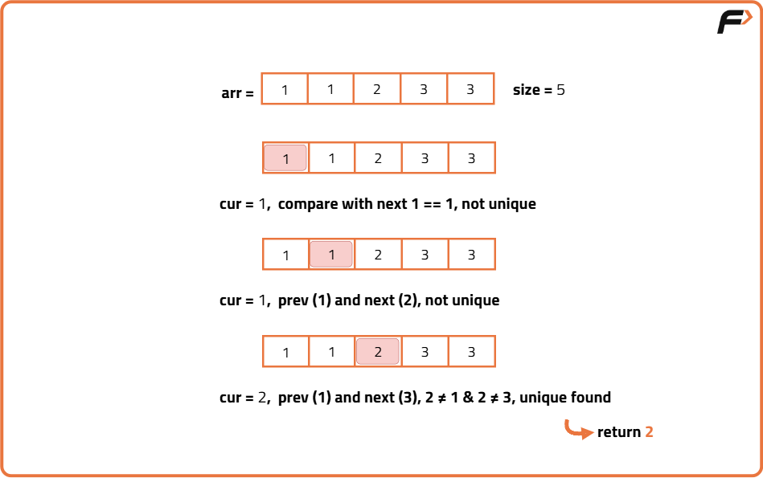
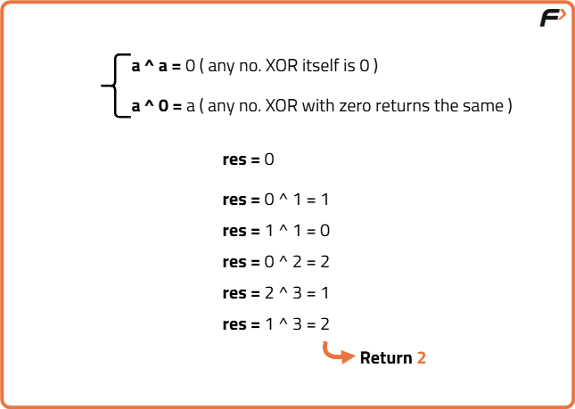
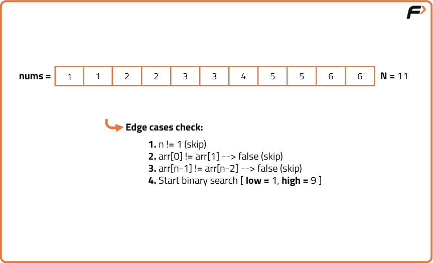
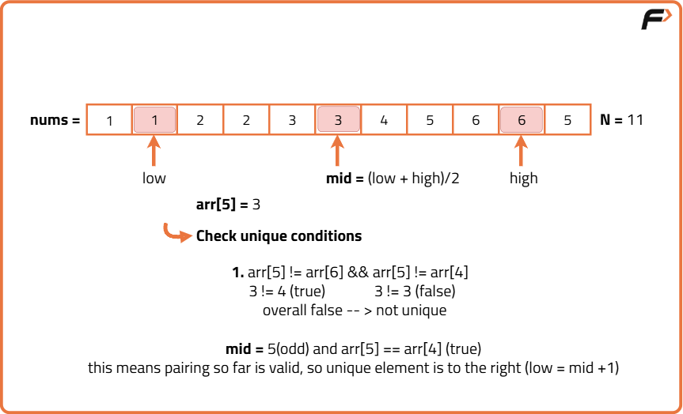
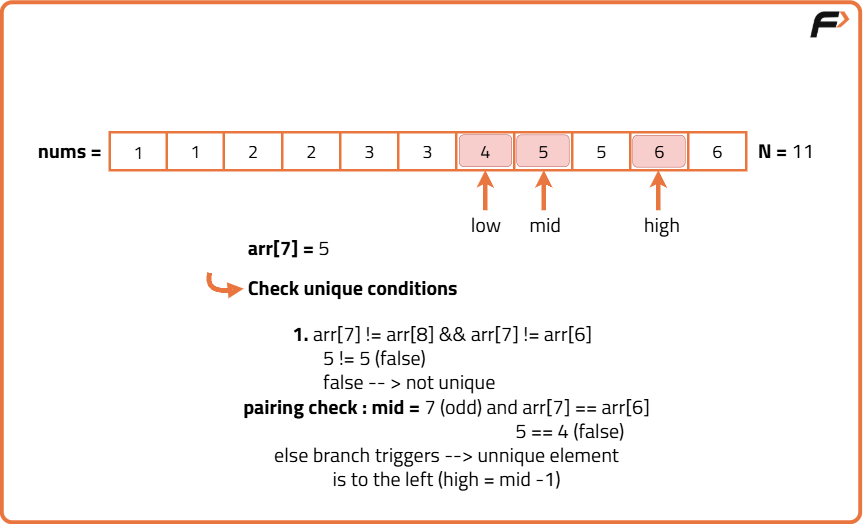
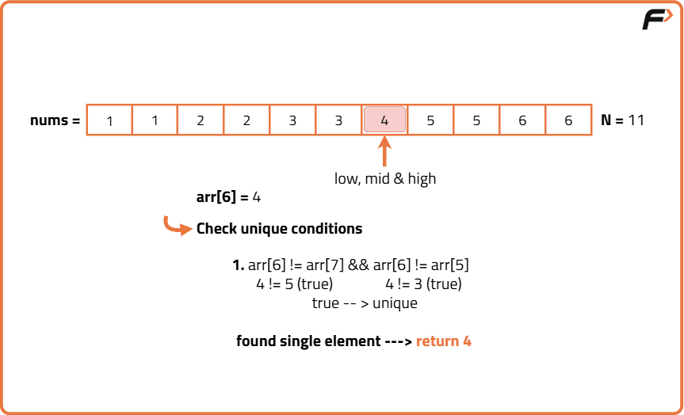

Search Single Element in a sorted array
Problem Statement: Given an array of N integers. Every number in the array except one appears twice. Find the single number in the array.
Examples
Input : arr[] = {1,1,2,2,3,3,4,5,5,6,6} Output: 4 Explanation: Only the number 4 appears once in the array.
Input: arr[] = {1,1,3,5,5} Output : 3 Explanation: Only the number 3 appears once in the array.
Disclaimer: Here is the practice link to help you assess your knowledge better. It's highly recommend trying to solve it before looking at the solution.
Brute force Approach 1
Algorithm
We handle corner cases:
- If it’s the first element, just compare it with the next.
- If it’s the last element, just compare it with the previous.
- Find the total size of the array.
- If the size is equal to one, return the only element.
- Traverse the array from start to end.
- If the current element is the first one, compare it with the next. If they are different, return it.
- If the current element is the last one, compare it with the previous. If they are different, return it.
- Otherwise, compare the current element with both previous and next. If it is different from both, return it.
- If no such element is found during traversal, return an invalid marker (though by problem guarantee, one will always exist).

Code
#include <bits/stdc++.h>
using namespace std;
class Solution {
public:
// Function to find the single non-duplicate element
int singleNonDuplicate(vector<int>& arr) {
// Get the size of the array
int n = arr.size();
// If array has only one element, return it
if (n == 1) return arr[0];
// Loop through the array
for (int i = 0; i < n; i++) {
// Check if it's the first element and not equal to the next
if (i == 0) {
if (arr[i] != arr[i + 1])
return arr[i];
}
// Check if it's the last element and not equal to the previous
else if (i == n - 1) {
if (arr[i] != arr[i - 1])
return arr[i];
}
// Check if the current element is not equal to both neighbors
else {
if (arr[i] != arr[i - 1] && arr[i] != arr[i + 1])
return arr[i];
}
}
// Dummy return if no element found (problem guarantees there is one)
return -1;
}
};
// Driver code
int main() {
// Input array with one unique element
vector<int> arr = {1, 1, 2, 2, 3, 3, 4, 5, 5, 6, 6};
// Create an object of Solution class
Solution obj;
// Call the function and store result
int ans = obj.singleNonDuplicate(arr);
// Print the result
cout << "The single element is: " << ans << "\n";
return 0;
}
Complexity Analysis
Time Complexity: O(N), N = size of the given array.We are traversing the entire array.
Space Complexity: O(1) as we are not using any extra space.
Brute Approach 2
Algorithm
- a ^ a = 0, XOR of two same numbers results in 0.
- a ^ 0 = a, XOR of a number with 0 always results in that number.
- We will declare an ‘ans’ variable initialized with 0.
- We will traverse the array and XOR each element with the variable ‘ans’.
- After complete traversal, the ‘ans’ variable will store the single element and we will return it.

Code
#include <bits/stdc++.h>
using namespace std;
class Solution {
public:
// Function to find the single non-duplicate element using XOR
int singleNonDuplicate(vector<int>& arr) {
// Get the size of the array
int n = arr.size();
// Initialize the result variable with 0
int ans = 0;
// Traverse the array and XOR all elements
for (int i = 0; i < n; i++) {
ans = ans ^ arr[i];
}
// Return the unique element found using XOR
return ans;
}
};
// Driver code
int main() {
// Input array with all elements occurring twice except one
vector<int> arr = {1, 1, 2, 2, 3, 3, 4, 5, 5, 6, 6};
// Create an object of Solution class
Solution obj;
// Call the function and store the result
int ans = obj.singleNonDuplicate(arr);
// Print the result
cout << "The single element is: " << ans << "\n";
return 0;
}
Complexity Analysis
Time Complexity: O(N), N = size of the given array.We are traversing the entire array.
Space Complexity: O(1) as we are not using any extra space.
Optimal Approach
Algorithm
But once the unique element is inserted, this pairing pattern breaks and the shift happens after that unique element. So we can use this pattern to cut the search space in half using binary search:
- If the pairing is proper (i.e.,
arr[mid] == arr[mid ^ 1]), then the unique (non-duplicate) element lies in the right half. - If the pairing breaks (i.e.,
arr[mid] != arr[mid ^ 1]), then the unique element lies in the left half.
- Check if the array has only one element, return that element.
- Check if the first element is not equal to the second return the first.
- Check if the last element is not equal to the second last return the last.
- Set two pointers: low = 1, high = n - 2 (excluding boundary elements).
- Run a loop while low ≤ high:
- Find mid = (low + high) / 2.
- If arr[mid] ≠ arr[mid - 1] and arr[mid] ≠ arr[mid + 1], return arr[mid].
- Check if mid is part of a correct pair:
- If mid is even and arr[mid] == arr[mid + 1], or
- If mid is odd and arr[mid] == arr[mid - 1],
- Then the unique element lies to the right, so move low = mid + 1.
- Otherwise, move high = mid - 1.
- If no unique element is found (theoretically unreachable), return -1.




Code
#include <bits/stdc++.h>
using namespace std;
class Solution {
public:
// Function to find the single non-duplicate element using binary search
int singleNonDuplicate(vector<int>& arr) {
// Get the size of the array
int n = arr.size();
// Edge case: only one element in the array
if (n == 1) return arr[0];
// Edge case: first element is the unique one
if (arr[0] != arr[1]) return arr[0];
// Edge case: last element is the unique one
if (arr[n - 1] != arr[n - 2]) return arr[n - 1];
// Initialize binary search bounds (exclude first and last index)
int low = 1, high = n - 2;
// Perform binary search
while (low <= high) {
// Calculate middle index
int mid = (low + high) / 2;
// Check if middle element is the unique one
if (arr[mid] != arr[mid + 1] && arr[mid] != arr[mid - 1]) {
return arr[mid];
}
// If mid is in the left half (pairing is valid)
if ((mid % 2 == 1 && arr[mid] == arr[mid - 1]) ||
(mid % 2 == 0 && arr[mid] == arr[mid + 1])) {
// Move to the right half
low = mid + 1;
}
// If mid is in the right half (pairing broken earlier)
else {
// Move to the left half
high = mid - 1;
}
}
// Dummy return (not reachable if input is valid)
return -1;
}
};
// Driver code
int main() {
// Input array with all elements appearing twice except one
vector<int> arr = {1, 1, 2, 2, 3, 3, 4, 5, 5, 6, 6};
// Call the function and store the result
Solution obj;
int ans = obj.singleNonDuplicate(arr);
// Print the result
cout << "The single element is: " << ans << "\n";
return 0;
}
Complexity Analysis
Time Complexity: O(logN), N = size of the given array ,as we are basically using the Binary Search algorithm.
Space Complexity: O(1) as we are not using any extra space.